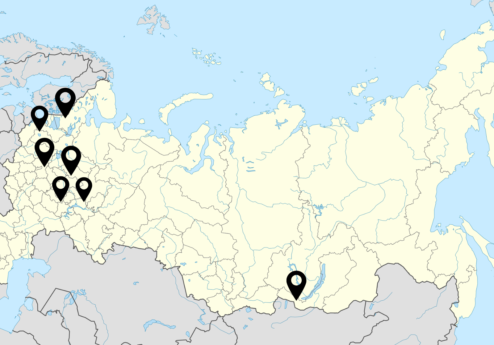
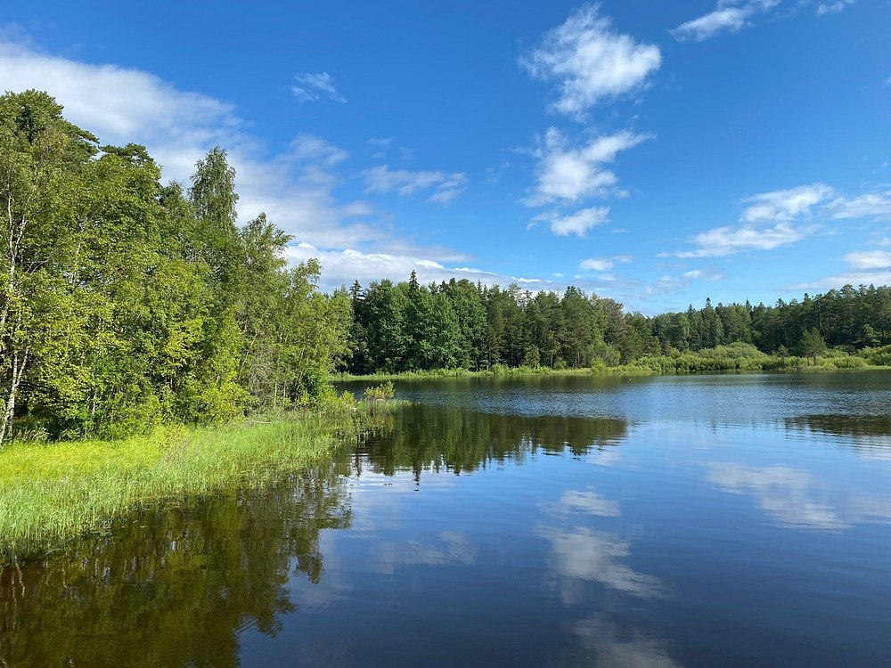
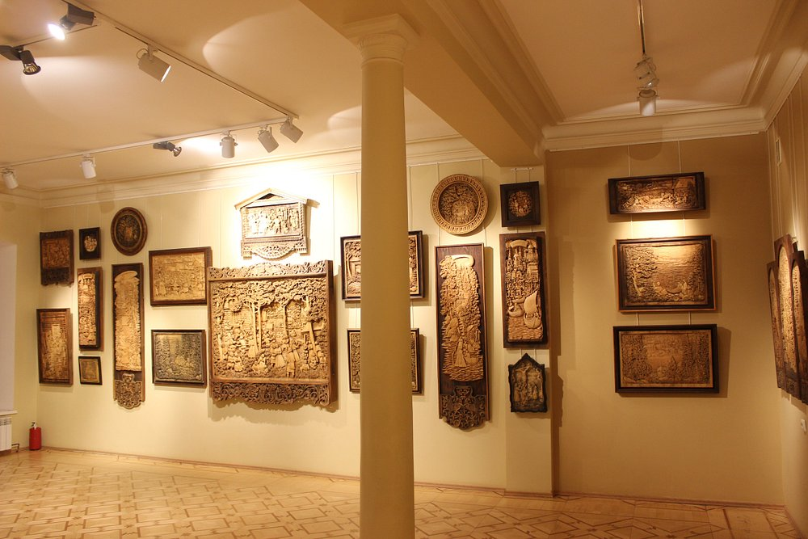
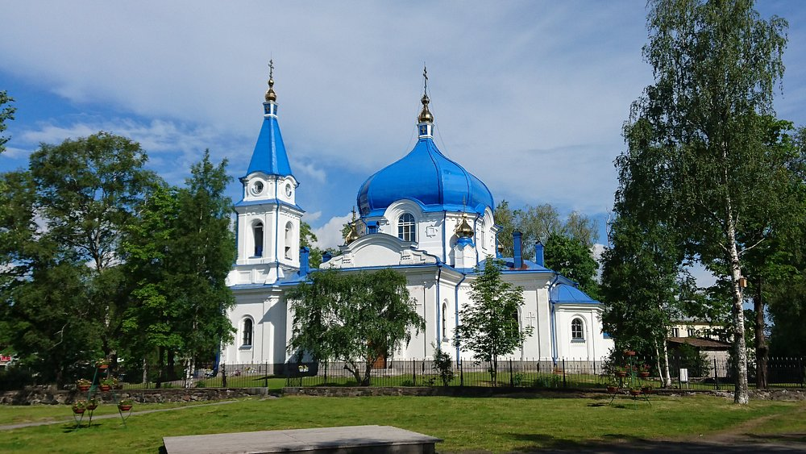

Où se situe Sortavala ?
Située au nord-ouest de la Russie, dans la république de Carélie, Sortavala se trouve sur la rive nord du lac Ladoga, le plus grand lac d’Europe. Cette position privilégiée lui offre un environnement exceptionnel composé de collines, forêts et nombreuses îles.
Sortavala dans le monde :

Localisation de Sortavala
Sortavala est située dans la République de Carélie, au nord-ouest de la Russie, proche de la frontière finlandaise. Elle est bordée par le lac Ladoga, le plus grand lac d'Europe, ce qui lui confère un paysage naturel unique et très apprécié.
Histoire de Sortavala :
XIIe siècle
Fondation initiale avec une forteresse.
1632
Fondation officielle sous contrôle suédois.
1721
Intégration à l'Empire russe. (traité de Nystad)
1944
Annexion définitive après la Guerre de Continuation
(exode des habitants finlandais).
Avec son histoire, Sortavala a subi de nombreux changements. En effet,
la ville ayant changé de mains plusieurs fois
(Suède, Russie, Finlande) possède maintenant un patrimoine
riche issu de cultures différentes, ce qui la rend propice au tourisme.
Le tourisme :
- Économique :
- Création d’emplois locaux et valorisation du patrimoine.
- Soutien aux artisans, commerçants et guides locaux.
- Environnemental :
- Préservation des écosystèmes sensibles.
- Limitation de la surexploitation des ressources naturelles.
Le TOP 3 des lieux les plus prisés :

Adresse : 6 Komsomolskaya .
horaire : ouvert 8h00 / 19h00

Adresse : 42 km de Sortavala
Horaire : ouvert 24h00/24h00

Adresse : Ulitsa Gor'kogo,
horaire : ouvert 9h00/16h45